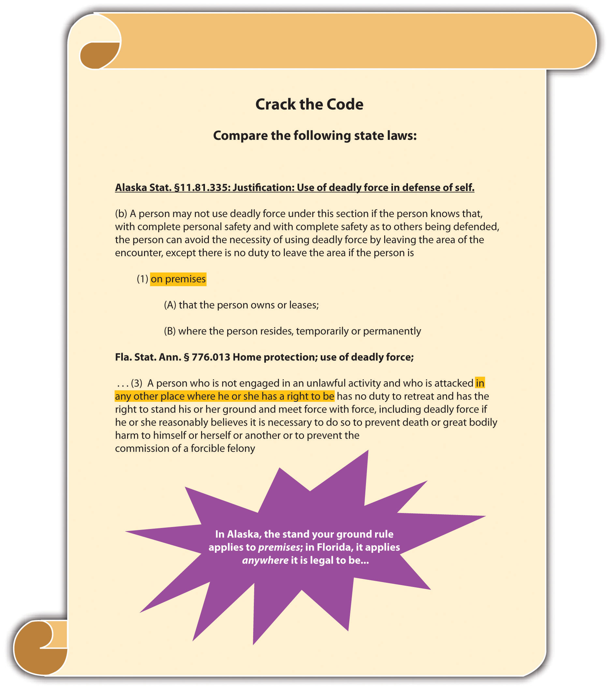
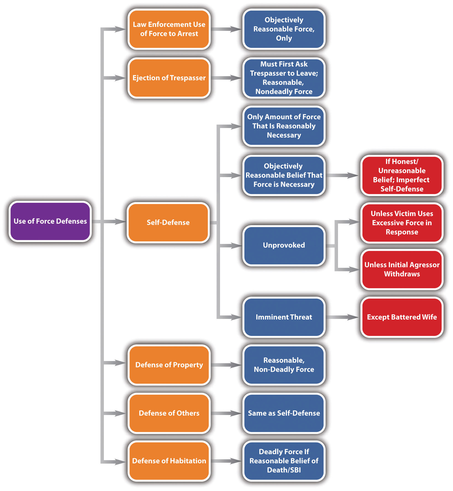

Aside from self-defense, a defendant can legally use force to defend another person, real or personal property, and habitation. In addition, law enforcement can use force to arrest or capture individuals who reasonably appear to be committing crimes. In this section, the elements of several use-of-force defenses will be reviewed. Keep in mind that these defenses can be statutory, common-law, perfect, or imperfect, depending on the facts and the jurisdiction.
According to early common law, a defendant could use force to defend another only when the defendant and the person defended had a special relationship, such as a family connection. Most jurisdictions now reject this common-law restriction on defense of others and allow a defendant to defend anyone to the same degree that he or she could use self-defense.People v. Kurr, 654 N.W.2d 651 (2002), accessed November 14, 2010, http://scholar.google.com/scholar_case?case=14992698629411781257&hl=en&as_sdt=2&as_vis=1&oi=scholarr. Thus in a majority of jurisdictions, defense of othersA defense that allows a defendant to defend another to the same degree he or she could defend himself or herself. requires the same elements as self-defense: the individual defended must be facing an unprovoked, imminent attack, and the defendant must use a reasonable degree of force with a reasonable belief that force is necessary to repel the attack.
Occasionally, a defendant uses force to defend another who has no legal right to use force in self-defense. Under the common law, the defendant could not use force legally if the individual defended could not use force legally in self-defense. However, the majority of states now allow a defendant to use force to defend another person if it reasonably appears that use of force is justified under the circumstances.Commonwealth v. Miranda, No. 08-P-2094 (2010), accessed November 14, 2010, http://www.socialaw.com/slip.htm?cid=19939&sid=119. The Model Penal Code allows the defense of another when “under the circumstances as the actor believes them to be, the person whom he seeks to protect would be justified in using such protective force” (Model Penal Code § 3.05(1) (b)). Thus if the defendant has a subjective belief that the individual defended could use force legally in self-defense, defense of others is appropriate under the Model Penal Code.
Alex and Shane, aspiring law enforcement officers, are performing a training maneuver in a rural area. Their instructor Devin is watching nearby. Alex pretends to attack Shane. Just as Devin is about to demonstrate a takedown, Timmy, who is jogging in the area, dashes over and begins beating Alex. Under the older common-law rule, Timmy could be successfully prosecuted for battery of Alex. Shane did not have the right to use self-defense during a practice maneuver, so neither did Timmy. In jurisdictions that allow defense of others if it reasonably appears that self-defense is warranted, Timmy could probably use the defense to battery because it reasonably appeared that Alex was about to unlawfully attack Shane. In jurisdictions that follow the Model Penal Code, Timmy can most likely use defense of others as a defense to battery because it is clear Timmy honestly believed Shane had the right to use self-defense in this situation.
All jurisdictions allow individuals to use force in defense of propertyA defense that allows a defendant to defend real or personal property using nondeadly force. under certain specified circumstances. Property can be real or personal. Real propertyLand and anything permanently attached to it. is land and anything permanently attached to it. This includes a home. However, defense of the home is discussed in Section 5.3.3 "Defense of Habitation". Personal propertyMovable objects. is any movable object.
In the majority of states, the defendant can use force only to defend real or personal property if the defendant has an objectively reasonable belief that an imminent threat of damage, destruction, or theft will occur.California Criminal Jury Instructions No. 3476, accessed November 15, 2010, http://www.justia.com/criminal/docs/calcrim/3400/3476.html. The Model Penal Code provides “the use of force upon or toward the person of another is justifiable when the actor believes that such force is immediately necessary: (a) to prevent or terminate an unlawful entry or other trespass upon land or a trespass against or the unlawful carrying away of tangible, movable property” (Model Penal Code §3.06(1) (a)). Thus if the defendant has a subjective belief that force is immediately necessary to protect real or personal property, force is appropriate under the Model Penal Code.
The amount of force that a defendant may legally use to protect real or personal property is reasonable force, under the circumstances.K.S.A. § 21-3213, accessed November 15, 2010, http://kansasstatutes.lesterama.org/Chapter_21/Article_32/21-3213.html. The defendant can also chase someone who steals personal property and take the item back.Conn. Gen. Stat. § 53a-21, accessed November 15, 2010, http://www.cga.ct.gov/2009/pub/chap951.htm#Sec53a-21.htm. The Model Penal Code provides “the use of force upon or toward the person of another is justifiable when the actor believes that such force is immediately necessary…to retake tangible movable property” (Model Penal Code §3.06(1) (b)). In general, the Model Penal Code and most states do not authorize the use of deadly force to protect property (other than the home) under any circumstances.Fla. Stat. Ann. § 776.031, accessed November 16, 2010, http://law.justia.com/florida/codes/2007/TitleXLVI/chapter776/776_031.html.
Kelsey sees Keith, her stepbrother, approaching her brand new car with a key in his hand. It appears that Keith is about to scrape the paint on the door of the car with this key. Kelsey tackles Keith to prevent him from vandalizing the car. Kelsey has probably used reasonable force under the circumstances and can claim defense of property as a defense to battery. If Keith testifies that he was simply going to hand Kelsey the key, which she left in the house, the attack could still be justified if the trier of fact determines that it was objectively reasonable for Kelsey to believe Keith was about to damage her property. In jurisdictions that follow the Model Penal Code, Kelsey can probably use defense of property as a defense to battery because it is clear Kelsey believed that force was immediately necessary to protect her personal property in this situation. Of course, if Kelsey pulls out a gun and shoots Keith, she could not claim defense of property because deadly force is never justifiable to protect real or personal property from harm.
A simple trespasser is an individual who is present on real property without consent of the owner. Property owners have the legal right to eject trespassers under certain specified circumstances.
Most states authorize the ejection of a trespasser if the trespasser is first asked to leave and fails to comply within a reasonable time.N.J. Stat. § 2C:3-6, accessed November 15, 2010, http://law.onecle.com/new-jersey/2c-the-new-jersey-code-of-criminal-justice/3-6.html. The degree of force that can be used to eject the trespasser is reasonable force, under the circumstances.Iowa Code § 704.4, accessed November 15, 2010, http://coolice.legis.state.ia.us/cool-ice/default.asp?category=billinfo&service=iowacode&ga=83&input=704#704.4. Deadly force is never reasonable to eject a trespasser unless the trespasser threatens imminent deadly force against the defendant or another individual.State v. Curley, Docket # 0000011.WA (Wash. App. 2010), accessed November 15, 2010, http://scholar.google.com/scholar_case?case=11648057948374905030&q= State+v.+Curley&hl=en&as_sdt=2,5&as_ylo=2009. Deadly force under these circumstances is justified by self-defense or defense of others, not ejection of trespasser.
Sam sees Burt sitting on his lawn. Sam goes up to Burt and asks him to “move along.” Burt looks up, but does not stand. Sam goes into the house and calls law enforcement, but they inform Sam that there is a local emergency, and they cannot come and eject Burt for at least five hours. Sam goes back outside and sees that Burt is now sprawled out across the lawn. Sam grabs Burt, lifts him to his feet, and pushes him off the lawn and onto the sidewalk. Sam can probably use ejection of trespasser as a defense to battery of Burt. Sam asked Burt the trespasser to leave, and Burt ignored him. Sam’s attempt to rely on law enforcement was likewise unsuccessful. Sam’s use of nondeadly force appears objectively reasonable. Thus Sam’s ejection of a trespasser is most likely appropriate under these circumstances.
Defense of habitationA defense that allows the defendant to defend the home using deadly force if he or she has an objectively reasonable fear that an intruder will cause serious bodily injury or death to the home’s occupants. is a defense that applies specifically to the defendant’s residence. At early common law, a person’s home was as sacred as his or her person, and deadly force could be employed to protect it. The majority of states have since enacted modern castle lawsModern laws that allow the use of deadly force in defense of habitation. that embody this common-law doctrine. Other than the use of deadly force, defense of habitation generally follows the same rules as defense of property, self-defense, and defense of others. Thus this defense of habitation discussion focuses primarily on the use of deadly force.
The first state to expand the defense of habitation to include the use of deadly force was Colorado, with its “make my day” self-defense statute.Colo. Rev. Stat. Ann. § 18-1-704.5, accessed November 16, 2010, http://www.co.jefferson.co.us/jeffco/sheriff_uploads/revised_statutes.htm. In 2005, Florida began a wave of castle law modifications that resulted in most states revising their defense of habitation laws.Fla. Stat. Ann. § 776.013, accessed November 16, 2010, http://law.onecle.com/florida/crimes/776.013.html. Generally, three elements must be present before the use of deadly force is appropriate to defend habitation under modern castle laws. First, the intruder must actually enter or be in the process of entering the residence owned by the defendant.Fla. Stat. Ann. § 776.013, accessed November 16, 2010, http://law.onecle.com/florida/crimes/776.013.html. This excludes intruders who are outside or in the curtilageThe protected area around the home that is usually not included in defense of habitation., which is the protected area around the home. Second, the residence must be occupied when the entry occurs. This excludes devices like spring-gunsDevice that is designed to shoot an intruder when a home is entered. that protect unoccupied dwellings with deadly force.People v. Ceballos, 526 P.2d 241 (1974), accessed November 16, 2010, http://wings.buffalo.edu/law/bclc/web/calceballos.htm. Third, the defendant must have an objectively reasonable belief that the intruder intends to commit a crime of violence against the occupant(s) after entry.Or. Rev. Stat. § 161.225, accessed November 16, 2010, http://www.leg.state.or.us/ors/161.html. The Model Penal Code provides “[t]he use of deadly force is not justifiable…unless the actor believes that…the person against whom the force is used is attempting to dispossess him of his dwelling…or…attempting to commit…arson, burglary, robbery or other felonious theft…and either…has employed or threatened deadly force…or…the use of force other than deadly force would expose the actor or another in his presence to substantial danger of serious bodily harm” (Model Penal Code § 3.06 (3)(d)).
The majority of states’ castle laws abolish any duty to retreat when inside the home.Alaska Stat. § 11.81.335(b), accessed November 16, 2010, http://touchngo.com/lglcntr/akstats/Statutes/Title11/Chapter81/Section335.htm. Florida’s castle law creates a presumption that the defendant has a reasonable fear of imminent peril of death or great bodily injury when the intruder makes an unlawful or forceful entry.Fla. Stat. Ann. § 776.013, accessed November 16, 2010, http://law.onecle.com/florida/crimes/776.013.html. This compels the prosecution to disprove the defendant’s reasonable belief of death or great bodily injury beyond a reasonable doubt, which is extremely difficult. Additional features of many castle laws are civil immunityThe defendant cannot be sued for damages. and criminal immunityThe defendant cannot be prosecuted for a crime. from prosecution.720 ILCS § 5/7-2 (b), accessed November 16, 2010, http://www.ilga.gov/legislation/ilcs/ilcs4.asp?DocName=072000050HArt.+7&ActID=1876&ChapAct=720. Immunity from prosecution means that a defendant who complies with the castle law requirements cannot be sued for damages or prosecuted for a crime based on injury or death to the intruder.
Figure 5.4 Crack the Code
Nate, a homeowner with three children, hears the front door open in the middle of the night. Nate removes a handgun from the nightstand and creeps silently down the stairs. He sees Bob tiptoeing toward his daughter’s bedroom. Nate shoots and kills Bob. Unfortunately, Bob is Nate’s daughter’s boyfriend, who was trying to enter her bedroom for a late-night get-together. Nate could probably assert the defense of protection of habitation under modern castle laws in most jurisdictions. Bob made entry into an occupied residence. It is difficult to identify individuals in the dark and to ascertain their motives for entering a residence without the owner’s consent. Thus it was objectively reasonable for Nate to feel threatened by Bob’s presence and to use deadly force to protect his domicile and its residents. If Nate is successful with his defense, he will also be immune from a civil suit for damages if the castle law in his jurisdiction provides this immunity.
Change the example with Nate and Bob so that Bob enters the residence during the day, and Nate identifies him as his daughter’s boyfriend. Under these circumstances, the prosecution could rebut any presumption that Nate’s actions were objectively reasonable. A reasonable person would ask Bob why he was entering the residence before shooting and killing him. The trier of fact might determine that Nate’s intent was not to protect himself and his family, but to kill Bob, which would be malice aforethought. If Nate’s actions are not justifiable by the defense of habitation, he could be charged with and convicted of first-degree murder in this situation.
Occasionally, law enforcement must use force to effectuate an arrest or apprehend a criminal suspect. The appropriate use of force during an arrest or apprehension can operate as a defense to assault, battery, false imprisonment, kidnapping, and criminal homicide. At early common law, law enforcement could use reasonable, nondeadly force to arrest an individual for a misdemeanor and reasonable, even deadly force, to arrest an individual for any felony. Modern law enforcement’s ability to use deadly force is governed by the US Constitution.
The US Supreme Court clarified the constitutional standard for law enforcement’s use of deadly force in Tennessee v. Garner, 471 U.S. 1 (1985). In Garner, the Court invalidated a Tennessee statute that allowed law enforcement to exercise any degree of force to apprehend and arrest a fleeing felon. The law enforcement officer in Garner admitted that he shot and killed a suspect, reasonably believing he was unarmed. The Court held that the Fourth Amendment governed law enforcement’s use of deadly force in this situation because the use of deadly force is a seizure. Thus law enforcement’s use of deadly force must be scrutinized pursuant to the standard of constitutional reasonableness. According to the Court, the only constitutionally reasonable circumstances under which law enforcement can use deadly force to arrest or apprehend a fleeing felon is when law enforcement has probable cause to believe that the suspect poses a significant threat of death or serious physical injury to the officer or others.
Currently, most jurisdictions have statutes protecting law enforcement’s reasonable use of force when effectuating an arrest or apprehending a fleeing suspect. Under Garner, these statutes must restrict the lawful use of deadly force to potentially deadly situations. If a law enforcement officer exceeds the use of force permitted under the circumstances, the law enforcement officer could be prosecuted for a crime or sued for civil damages (or both).
Review the example in Chapter 1 "Introduction to Criminal Law", Section 1.2.1 "Example of Criminal Law Issues". In that example, Linda puts a bra in her purse without paying for it at an expensive department store. When she attempts to leave the store, an alarm is activated. Linda begins sprinting down the street. Colin, a police officer, just happens to be driving by with the window of his patrol car open. He hears the store alarm, sees Linda running, and begins shooting at Linda from the car. Linda is shot in the leg and collapses. In this example, no facts exist to indicate that Linda poses a potentially deadly threat to Colin or others. The fact that Linda is running down the street and an alarm is going off does not demonstrate that Linda has committed a crime necessitating deadly force to arrest. Thus Colin can use only nondeadly force to arrest Linda, such as his hands, or possibly a stun gun or Taser to subdue her. If Linda is unarmed and Colin uses a firearm to subdue her, the utilization of deadly force is excessive under these circumstances and Colin has no defense to assault with a deadly weapon or to attempted murder.
Change this example and imagine that Colin pulls over and attempts to arrest Linda. Linda removes a gun from her purse. Under most modern statutes, Colin does not have a duty to retreat and can use deadly force to arrest or apprehend Linda. Under Garner, it is reasonable to believe that Linda poses a danger of death or serious bodily injury to Colin or others. Thus Colin can constitutionally use deadly force to protect himself and the public from harm in this situation. Note that Linda’s theft is probably a misdemeanor, not a felony. However, it is Linda’s exhibition of deadly force to resist arrest that triggers Colin’s deadly force response. Under these circumstances, Colin’s use of deadly force is justified and can operate as a legal defense in a criminal prosecution or civil suit for damages.
Figure 5.5 Diagram of Use-of-Force Defenses
Answer the following questions. Check your answers using the answer key at the end of the chapter.